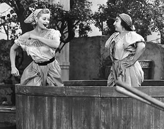

Favorite Shows
On-going Series
These are the series I am currently watching that are still running and have yet to be completed! As you can see, I'm not very hip, so I don't follow that many shows. However, if you have any suggestions of awesome series I should be watching, let me know!
Once Upon a Time
This is a fairly new series that has just run it's first season, and is about to begin on it's second season starting September 30th at 8pm. This show is basically a modern twist on classic fairy tales--see your childhood as you never have before! The basic premise is the characters of the fairytales we all knew and loved are cursed into our world (ouch!) but don't even know it! What! Here are my favorite characters from the show:
- Rumpelstiltskin
- Archie Hopper
- Henry Mills
Touch
This is also a new series that is about to begin it's second season in late October. The previews deceived me into thinking this show was about a father and his little boy, but it's actually way more in-depth than that. This show delves into life and how everything is interconnected in this intricate pattern that we don't even realize. Woah, I know right?? My parents have good taste, I never would have bothered watching this series if it wasn't for them.
Completed Series
There are my favorite shows that have been completed. Fortunately, I can watch them over and over again, to quell that inner sadness over the fact the future of these characters is finished.
Early Edition
This show is my favorite of the favorites. Maybe it's because I've been hooked on it since I was 5 years old (like I said, my parents have good taste!). For all I know, this series is what subconsciously influenced me to choose my current major as a Media Arts student working with video. It's actually a fairly cheesy show, but it works. Basically this guy, Gary Hobson, get's the newspaper a day early, so he essentially has a small glimpse of the future. He's a good guy, so he tries to do what he can to change the bad headlines about crime and death, resulting in his saving many random stranger's lives-- altruism at it's best!
Monk
This is a show about a detective, Adrian Monk, with OCD. It's a basic dramedy, combating serious situations with comedic scenarios; with of course the mystery aspect of Monk solving murders. My only issue with this show was it's season finale. I don't know what was up with the writer's, but I pretty much just pretend the season finale does not exist.
I Love Lucy
What can I say about this? It's a classic. Everybody knows Lucy, and everybody loves her.
